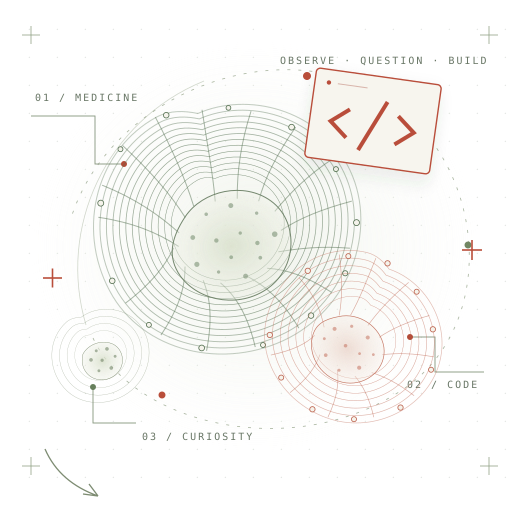

生物信息 / RESEARCH01
让真实数据，讲述生命的故事。
从差异分析、模型构建到单细胞与空间图谱，这里展示的是文章中的真实图像。每张预览完整呈现，也可以打开大图查看所有 panel。
8 张完整图像
你好，我是小单 Hello, I'm Xiaoshan.
白天在细胞与通路里找答案，晚上和 AI 一起把想法写成代码。正在探索，医学还可以有怎样的可能。

从细胞出发，
把问题写成代码。
A medical mind.
A maker's heart.
我是一名不甘心只背书的临床医学生，
也喜欢把“如果可以”变成“试试看”。
从大一加入课题组，到用 R 跑分析、画图、复现文献，生物信息慢慢成了我的日常。两年多的摸索，沉淀为两篇生信 SCI，也让我学会从数据里提出问题。
后来遇见 AI Agent，我开始沉迷 vibecoding。在 Reasonix 的三次贡献中，两个 PR 直接合并，另一个由维护者整合并保留共同署名。也正是在这里，我第一次体会到：自己做的小东西，可以成为别人工作的一部分。
这个小站记录科研、代码，也记录一路摸索的我。无论你是同路人，还是偶然路过的朋友，都欢迎在这里坐一会儿。
年课题组经历LEARNING BY DOING
篇生信 SCIFROM QUESTION TO PAPER
合并与署名贡献MERGED & CO-AUTHORED
一些研究，一些代码。
也是认识世界的几种方式。
从差异分析、模型构建到单细胞与空间图谱，这里展示的是文章中的真实图像。每张预览完整呈现，也可以打开大图查看所有 panel。
PROBLEM原始链接难以快速扫描
CHANGE图标、短标签与完整可复制文本并存
111focused checks
PROBLEM手动调整后长内容无法继续扩展
CHANGE保存高度成为下限，而不是硬上限
83focused tests
PROBLEM非本地链接缺少右键与键盘操作
CHANGE功能由维护者通过 #9824 完成整合
31interaction assertions
两个 PR 由项目直接合并；第三项由维护者接手整合，并在最终提交中保留共同署名。从交互细节到编辑体验，每一次修改都留下了真实痕迹。
没有宏大的路线图，
先把眼前的小问题弄明白。
在论文和 R 包之间来回翻页，想知道那些漂亮的图，以及图背后的结论，究竟是怎么来的。
试着让 Agent 接手重复的分析步骤，把更多时间留给问题本身，以及结果是否经得起推敲。
从医学文献到单细胞分析，想做几个顺手的小工具，让后来的人少踩一点自己踩过的坑。
A work in progress.
And happily so.
进入临床医学专业，也在课本之外，遇见了科研和数据。
学习 R、生信分析与文献复现。经历试错，也完成了两篇生信文章。
开始使用 AI Agent，尝试 vibecoding；在 Reasonix 完成两个已合并 PR，并获得一次维护者整合后的共同署名。
把医学、生物信息和 AI 接起来。先做出一个真正有用的小工具，再向前一步。
先跑通，再跑好。
先完成，再完美。
用 AI 放大自己。
也始终保留，自己的判断。